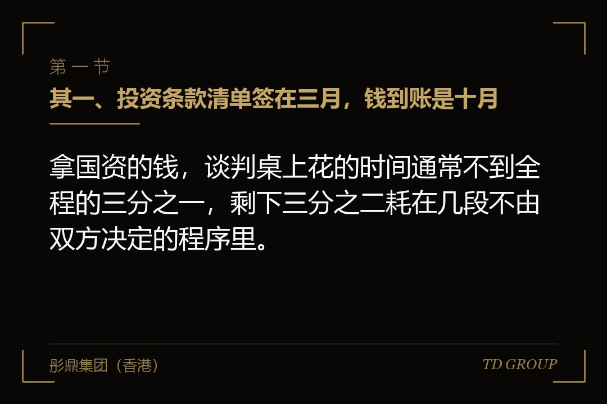
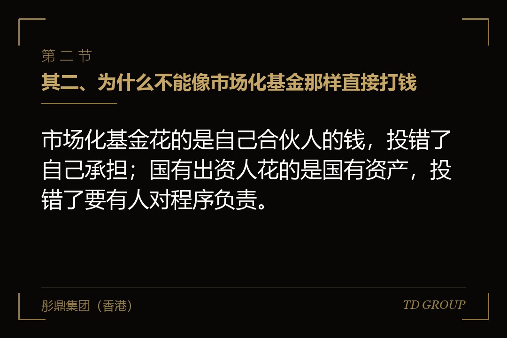
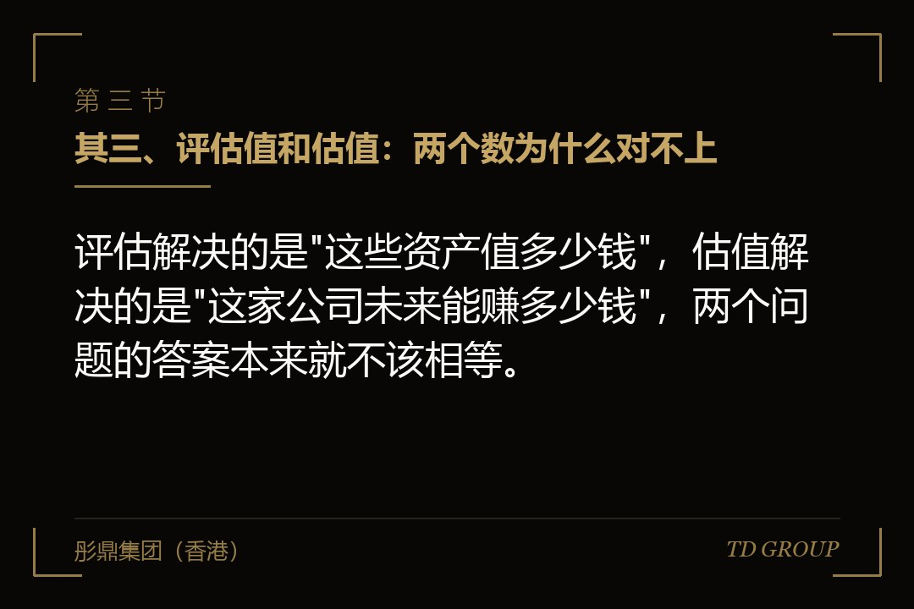

其一、投资条款清单签在三月，钱到账是十月

结论先行：拿国资的钱，谈判桌上花的时间通常不到全程的三分之一，剩下三分之二耗在几段不由双方决定的程序里。
假设有家做精密传动部件的公司，去年三月跟本地一家产业引导基金谈定：投资三千万，对应百分之十二的股权，年内完成交割。创始人按过去两轮融资的经验，把资金到位排在了六月。
四月，对方提出要先做资产评估，指定的评估机构进场。五月，评估报告出来，评估值和双方谈的估值差了一大截，估值口径要重新对。
六月到七月，评估报告在对方内部走备案。八月，项目被要求通过产权交易机构公开征集投资方，公告挂出去，等待期又是一段。
九月征集期满，没有第二家报名，原投资方按公告条件摘牌。十月完成签约与付款，工商变更在当月底办完。
整整七个月，商业条款一个字没改。创始人事后的总结很准确：他不是被对方拖了，是从一开始就把这件事的时间表按错了模板去排。
其二、为什么不能像市场化基金那样直接打钱

结论先行：市场化基金花的是自己合伙人的钱，投错了自己承担；国有出资人花的是国有资产，投错了要有人对程序负责。
这句话听起来像套话，但它决定了每一个具体动作。市场化基金的决策链条终点是投资决策委员会，委员会点头，钱就可以走。
国有出资人这一侧，决策链条的终点不是某个会议，而是一整套可以被事后审计追溯的书面记录。定价要有依据，依据要有出处，出处要经过一层独立的机构。
所以评估不是走过场，它是"这个价格不是拍脑袋定的"这句话的证据。公开征集也不是形式，它是"没有把国有资产贱卖给关系户"这句话的证据。
理解了这一点，很多在创始人看来不可理喻的要求就说得通了。对方的项目经理并不是不想快，他要的是一份将来经得起翻的卷宗。
反过来，这也给了创始人一个很实用的判断方法：凡是能被写进卷宗、能形成书面依据的要求，谈判空间不大；凡是纯商业判断的事项，空间反而比市场化基金更大。
其三、评估值和估值：两个数为什么对不上

结论先行：评估解决的是"这些资产值多少钱"，估值解决的是"这家公司未来能赚多少钱"，两个问题的答案本来就不该相等。
资产评估有它固定的方法体系，常用的是资产基础法、收益法和市场法。做净资产为主的传统制造企业，评估机构往往偏向资产基础法，出来的数接近账面净资产加上土地、房产的增值。
而双方在谈判桌上谈的估值，多数是按未来的收入或者利润倍数推出来的。一家净资产六千万、双方谈了四个亿估值的公司，评估报告很可能给出一个远低于四个亿的数。
两个数对不上的时候，通常有三条路。一是要求评估机构补充收益法的测算，并说明为什么以收益法结果为定价参考；二是把交易结构从增资改成增资加可选的后续安排；三是把估值降到评估结果附近，用别的条款找回来。
要特别注意的是最后这一句"用别的条款找回来"。国有出资人在业绩承诺、回购、优先分配这些条款上通常有它自己的内部口径，未必比降估值更容易谈。
还有一个容易被忽略的时间点：评估报告有有效期。拖过了有效期，整份报告要重做，前面那两个月等于白等。所以从评估基准日开始，倒推剩下的每一步该在什么时候完成，是创始人自己要盯的事。
其四、公开征集与非公开协议：走哪一条不由双方决定
结论先行：国有出资人的增资原则上要在产权交易机构公开征集投资方，只有符合规则列明的情形，才可以非公开协议方式进行。
公开征集的意思是，把这笔增资的条件挂到产权交易机构的平台上，公示一段时间，看有没有别人愿意按同样或者更好的条件来。
对创始人来说，这一步带来两个后果。其一是时间，公示期有法定的最短天数，且期满后还有资格确认与摘牌手续。其二是不确定性，理论上会出现第二家竞争者，届时价格和股比可能变。
实务中出现第二家的情况不多，但准备工作要按会出现来做。公告里的条件写得越具体——投资方要有什么行业背景、要承担什么产业配套义务——越不容易被无关的资金摘走。
可以走非公开协议方式的，通常是规则列明的特定情形，比如为了引进特定战略投资方且能说明必要性，或者本级出资人内部之间的调整。是否属于这些情形，由国有出资人一侧判断并履行内部审批，创始人这边争取的空间有限。
因此在谈判早期就要问清楚一句话：这一笔走的是公开征集还是协议方式。这一个答案会直接改变交割日的位置，往往相差两到三个月。
其五、时间表按最慢那一段排：几个可以预先算出来的等待点
结论先行：国资入股的总耗时不是各段之和的乐观值，而是由最慢那一段决定的，而最慢那段往往是别人的内部审批。
可以预先算出来的等待点有五个。等待点一是评估机构进场到出具报告，取决于公司的资料准备程度，账套乱、子公司多的会明显拉长。
等待点二是评估结果的备案或者核准。这一段完全在对方内部，创始人能做的只有把要补的资料一次给齐，减少来回。
等待点三是产权交易机构的公示期与摘牌手续，这一段的天数是刚性的，写在规则里，不因为项目着急而缩短。
等待点四是签约后的付款审批。国有出资人的付款通常也要走内部流程，签了字不等于当周到账，这一点要在协议里把付款条件和天数写清楚。
等待点五是工商变更与产权登记。产权登记是国有资产这一侧的手续，跟工商变更不是同一件事，两者的顺序和材料要提前问清楚。
把这五段串起来，就能看出为什么开头那家公司用了七个月。它不是被谁拖了，而是五段等待各自都在正常范围内，加起来就是那个数。
其六、拿了这笔钱之后，公司的每一次股权变动都不一样了
结论先行：国有股东进来以后，公司后续的股权转让、增资、乃至员工持股安排，都可能要重走一遍评估与进场的程序。
这是创始人最容易低估的一件事。签约那天关心的是钱什么时候到，而真正影响未来三五年的，是股东名册上多了一位有特殊程序要求的股东。
后续每一次涉及国有股东持股比例变化的动作，原则上都要按同样的路径来：评估、备案、必要时进场。包括下一轮融资导致的稀释、老股转让、以及以资本公积转增注册资本这类看起来纯技术性的操作。
员工持股平台的搭建与调整同样会被牵住。授予价格、行权价格怎么定，在有国有股东的公司里往往要能说明定价依据，不能只写一句按双方协商确定。
还有一层是信息义务。国有股东通常要求按期取得财务报表与重大事项报告，且它自己还要向上报送，所以报表的口径和时点会比市场化投资人更硬。
我们跟华尔街俱乐部有合作，见过的案例多一些，创始人事后回头看，普遍认为这一层的影响比当初谈的估值更长远——钱是一次性的，程序是长期的。
其七、退出那一天，同样的程序要再走一遍
结论先行：国有股东退出时的转让价格同样要以评估结果为参考并履行进场程序，这决定了后续投资人接不接得住这部分股权。
很多创始人在签约时只谈进来的事，不谈出去的事。等到三五年后国有股东要退，才发现这一步的复杂程度不亚于当初进来。
要提前想清楚的有三件。其一是接盘方是谁：如果指望创始人自己或者公司回购，价格要以届时的评估结果为参考，可能远高于当初的出资额加固定收益。
其二是时间：退出同样可能要进场公开转让，这意味着新一轮投资人不能简单地跟国有股东私下签一份转让协议了事。
其三是与新投资人的衔接：下一轮领投方在做尽调时会问国有股东的退出安排，答不上来会直接影响本轮的节奏。
正确的做法是在这一轮的协议里，就把退出的触发条件、程序配合义务、以及各方在届时应当提供的资料写清楚。这几句话在签约那天看起来多余，在退出那年是省下几个月的关键。
其八、收口：签之前必须问清楚的七件事
结论先行：这七个问题在签署投资条款清单之前问，答案会改变时间表；签完再问，答案只会变成解释。
其一，对方的出资人层级是哪一级，评估结果由哪一级备案或者核准，这一段的通常耗时是多久。
其二，这一笔走公开征集还是非公开协议方式，判断依据是什么，由谁在什么时候作出这个判断。
其三，评估机构由谁选、什么时候进场，评估基准日定在哪一天，报告的有效期到什么时候。
其四，如果评估结果与双方谈定的估值差距较大，对方内部的处理路径是什么，有没有先例。
其五，签约到实际付款之间还要走几道内部审批，协议里那句付款期限究竟从哪一天起算，是签署日、生效日，还是某一份批复下来的那一天。
其六，交割后的产权登记由谁办、需要公司提供什么材料，与工商变更的先后顺序怎么安排。
其七，未来公司再融资、老股转让、调整员工持股平台时，哪些动作会触发重新评估与进场，把这几种情形在协议里逐条列明。
因此，拿国资的钱，难的从来不是谈条款，而是把一条别人的程序排进自己的时间表。把上面七个问题在签字之前问完，通常能把整体耗时压缩三分之一；问不出答案的那几段，就按最保守的天数往后排，别把生产、订单和下一轮的节奏押在一个乐观的交割日上。